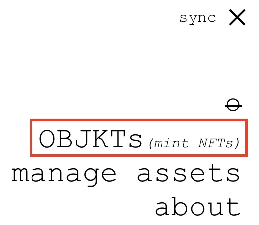

how to NFT
僕もちゃんとこの単語を知ったのはつい最近の NFT ですが、クリエィティブ・アート界隈で物議を醸しているデジタルアートを売り買いする仕組みです。
ちょっと前までは、この仕組みで売り買いするにはマイニングの過程でものすごい量の %CO2% を使うという話だったので、最近子供が産まれてただでさえカーボンフットプリント気にしないといけない立場なので、よしておこうかなと思っていました。
でも、すぐにその懸念を乗り越えたものが出てきて、また話題になっていた。アートの取引のあり方や、結局これって壮大な罠なのではといろいろ言われていますが、試してみないと失敗してみないと、賛成も批判もできないので、やってみた。
tezos という通貨を使うようで、詳しいことを調べるとこれも面白そうなのですが、割愛して How To に徹しようと思います。
一応出品した結果は、こちら。みんな買ってね!!!
https://www.hicetnunc.xyz/objkt/8119
近所の子供用ゲーセン(chuck’e’cheese)で撮った写真を photoshop の neuralnetfilter 怒った顔度 1%増やして、その後-1%する処理を 20 回くらいやりました。
一応言っておきますが、このガイドを通していかなる損失や責任は追いません。試しにやってみるのに使ったお金と提出したアート作品はドブに捨てる勢いでやりましょう。
まず、作品を売りに出す段階で手数料がかかるので、先に tezos を獲得しましょう。
以前も似たように遊びで bitcoin を買った coinbase.com のアカウントでちょっとだけ tezos を買いました。
Figure 1: tezos 買う
ちょっと待って無事送金されるのを確認しましょう。
Temple wallet エクステンションに送金する
もしかしたら coinbase のウォレットも対応しているのかもしれませんが、酒井はブラウザ・エクステンションのウォレットに移しました。
Chome お使いの方は: https://chrome.google.com/webstore/detail/temple-tezos-wallet-ex-th/ookjlbkiijinhpmnjffcofjonbfbgaoc
Firefox は: https://addons.mozilla.org/firefox/addon/temple-wallet
でウォレット作りますかーと言われるので、作りましょう。パスワードだったりフレーズだったりを書き残しておきましょう。
で先ほど、取引所で買った tezos を temple ウォレットに送金します。Send みたいなボタンがあるはずなので、temple のアドレスに送ります。temple エクステンションを開くとコピペできます。
Figure 2: 赤枠の箇所がアドレスです、クリックしてコピーする
作品登録をする
いよいよ、取引所である https://www.hicetnunc.xyz です。まずは作品を登録して、そのために少し手数料を取られます。上の≡ボタンを押して、objkts (mint) を押して、作品登録します。

Figure 3: 作品登録します。
作品の情報を記入します。最後の項目の amount はこの作品を何個売るか。複製の数を指定するんですね。この時点で、作品の値段は設定しません。途中承認してくれとエクステンションから迫られたりするのでここは OK してあげます。
Figure 4: 必要な情報を記入、エディション数は販売数ですね。よくシリアル番号とかありますよねそれです。
価格の設定
作品登録が終わったら、また上の≡マークを押して、manage assets、この時点では Not for Sale となっているはずです。swap で売りたいエディションの数と単価を買いて販売開始! 取り下げと削除の違いは、価格の変更とかする場合は一度取り下げしてから、再度出品するらしく、削除は文字通り DB から消えるそうです。この時点で酒井がやってみたところ、cancel と delete に関しては、反映に少し時間がかかるようです。
Figure 5: swap で出品数と価格を tezos で記入する。
以上ざっとこんな感じです。これを買いている時点ではまだ売れていないので、売れるとどうなるかは謎です。売れたら一部をアジア系アメリカ人に寄付しようと思います。〇〇したいから金くれという方法もありかなと思ったりしました。（機材とかもいいのでは？）
質問があったら彼らの discord に日本語チャンネルも用意されているので聞いてみれば解決しそうです。